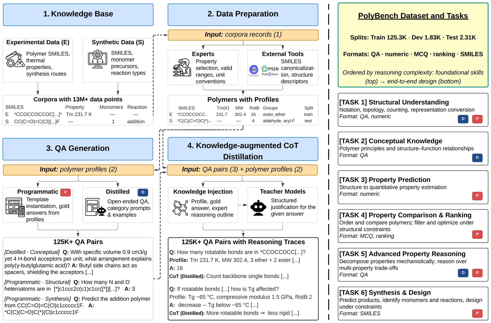

About
PolyBench is a large-scale training and evaluation benchmark of more than 125K polymer design-related tasks, grounded in a knowledge base of over 13 million experimental and synthetic polymer data points and augmented with knowledge-grounded chain-of-thought supervision. LLMs with 7B–32B parameters trained on PolyBench outperform similar-sized baselines and compete with frontier LLMs.

Research in AI4Science has shown promise in many science applications, including polymer design. However, current LLMs are ineffective in this problem space because: (i) most models lack polymer-specific knowledge, and (ii) existing aligned models have limited coverage of knowledge and capabilities relevant to polymer design. Addressing this, we introduce PolyBench, a large-scale training and test benchmark dataset of more than 125K polymer design-related tasks, leveraging a knowledge base of more than 13 million data points obtained from experimental and synthetic data sources to ensure broad coverage of polymers and their properties. For effective alignment using PolyBench, we introduce a knowledge-augmented reasoning distillation method that augments this dataset with structured CoT. Furthermore, tasks in PolyBench are organized from simple to complex analytical reasoning problems, enabling generalization tests and diagnostic probes across the problem space. Experiments show that small- and mid-sized language models with 7B to 32B parameters, trained on PolyBench, outperform similar-sized models and remain competitive with closed-source frontier LLMs on PolyBench's test dataset, while demonstrating performance gains on external polymer benchmarks.
Polymer design is multi-constraint by nature. A single design prompt jointly specifies property targets, available reactants, and functional constraints. A PolyBench-trained model has to decompose the prompt and emit a valid SMILES repeat unit that satisfies all of them at once.
Citation
@misc{mohanty2026polybench,
title = {Teaching and Evaluating {LLM}s to Reason About Polymer Design Related Tasks},
author = {Mohanty, Dikshya and Hasan, Mohammad Saqib and Monsur, Syed Mostofa
and Zheng, Size and Hsiao, Benjamin and Balasubramanian, Niranjan},
year = {2026},
note = {To appear in EACL 2027},
url = {https://github.com/StonyBrookNLP/PolyBench}
}